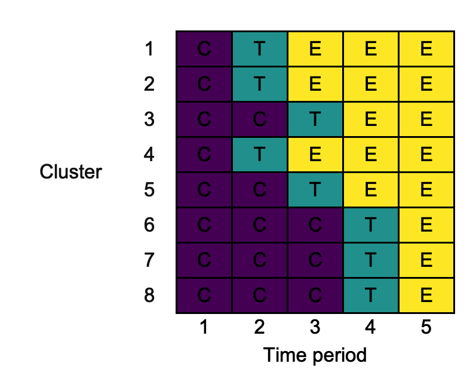
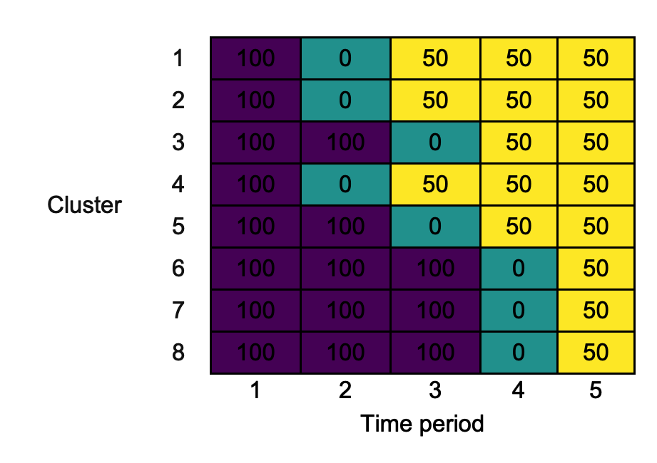
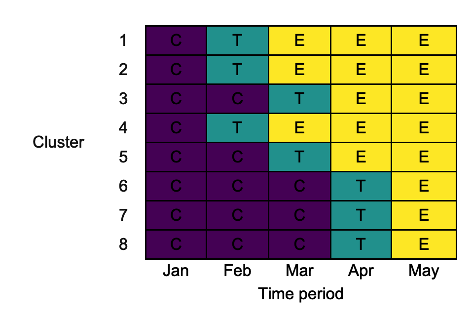
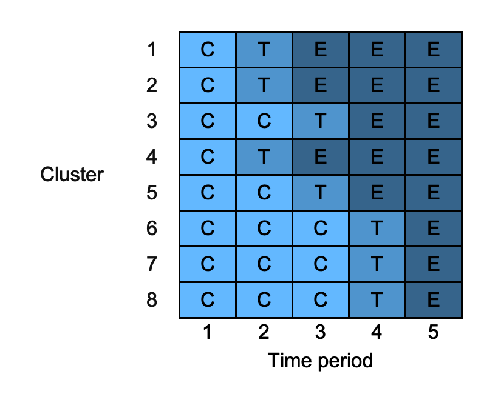
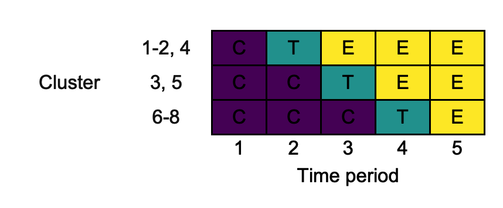
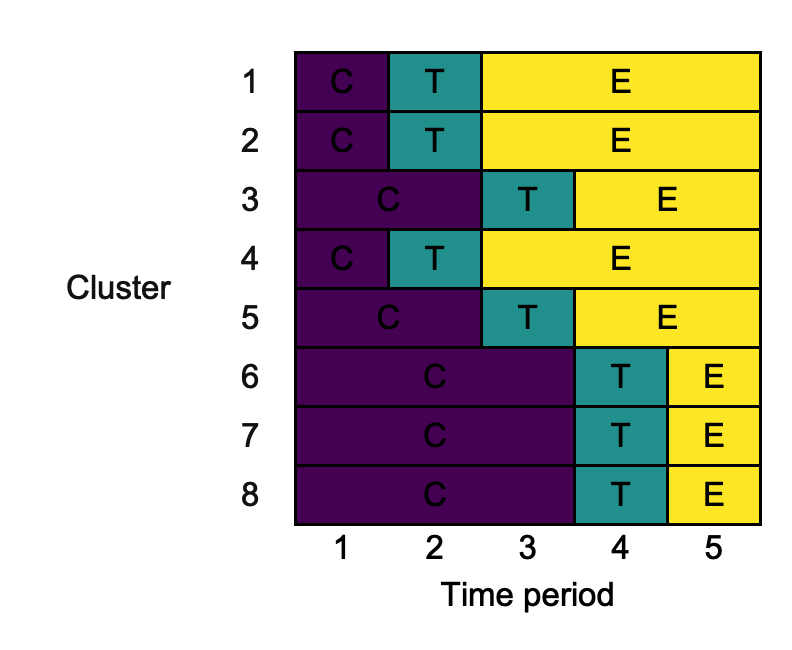
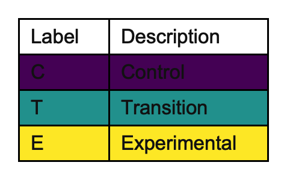
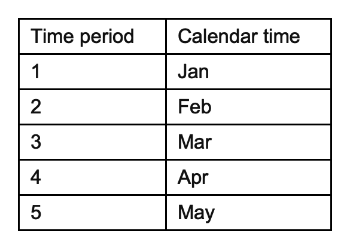

swcrt: Draw and export stepped-wedge cluster randomised trial design diagrams
Michael J Grayling, Newcastle University (michael.grayling@newcastle.ac.uk)
10/09/2020
Source:vignettes/swcrt.Rmd
swcrt.Rmdlibrary(swcrt) #> ----------------------------------------------------------------------------- #> swcrt: Draw and export stepped-wedge cluster randomised trial design diagrams #> ----------------------------------------------------------------------------- #> #> v.0.1: For an overview of the package's functionality enter: ?swcrt #> #> For news on the latest updates enter: news(package = "swcrt")
1. Introduction
swcrt is an R package that helps produce diagrams of stepped-wedge cluster randomised trial (SW-CRT) designs, like those advocated for inclusion when reporting SW-CRTs by Hemming et al. (2018). The produced diagrams can be exported in .docx, .png, and .pptx formats.
1.1. Getting started
The latest development version of swcrt available from GitHub can be installed with:
devtools::install_github("mjg211/swcrt")
An introductory example of how to make use of the package’s core functionality can be found below. More detailed support is available in the remainder of this vignette. For further help, please contact Michael Grayling at michael.grayling@newcastle.ac.uk.
1.2. Example
As a basic example, we consider reproducing the 4-cluster 5-time period design used in the trial reported by Bashour et al. (2013). First, create the design matrix using design_sw():
X <- design_sw(clusters_per_time_period = c(0, 1, 1, 1, 1), labels = c("C", "I")) X #> 1 2 3 4 5 #> 1 "C" "I" "I" "I" "I" #> 2 "C" "C" "I" "I" "I" #> 3 "C" "C" "C" "I" "I" #> 4 "C" "C" "C" "C" "I"
Here, we’ve labelled the two conditions "C" and "I" to reflect their role as the control and intervention arms. The input clusters_per_time_period is used to specify the design; a single cluster switches in time periods two through five. We can now plot this using draw_sw(), exporting in .png format:
png_of_design <- draw_sw(X, make = "png")
The resultant .png looks as follows:

2. Available functions
Currently, two functions are exported for the user: design_sw and draw_sw. Details given in their help files is replicated below.
2.1. design_sw
Description
design_sw builds a binary treatment indicator matrix for a specified conventional (i.e., two treatment conditions, say control and experimental interventions) SW-CRT design, for subsequent use with draw_sw.
Arguments
-
clusters_per_time_period: Anumericvector; elementclusters_per_time_period[i]indicates the number of clusters that switch to the experimental intervention in time periodi. The length ofclusters_per_time_periodthus indicates the number of time periods. Defaults toc(0, 1, 1, 1, 1). -
labels: Avectoroflengthtwo, giving labels for the two intervention conditions. Defaults toc("0", "1"). -
row_names: Avector, givingrownamesto add to the produced design. Must havelengthequal tosum(clusters_per_time_period). -
col_names: Avector, givingcolnamesto add to the produced design. Must havelengthequal tolength(clusters_per_time_period).
2.2. draw_sw
Description
draw_sw draws SW-CRT design diagrams that can be exported in .docx, .png, and .pptx formats.
Arguments
-
design: A SW-CRT design (i.e., information on the planned roll-out) to draw a diagram for. Must be either adata.frameor a matrix. Defaults todesign_sw(). -
cp_contents: Values to add to the cluster-period cells in the produced diagram; modify this when cluster-period cells should contain details on something other than the intervention condition. Must be either adata.frameor amatrix. Defaults todesign. -
row_names: Alogicalvariable, indicating whether the row names in the produced diagram should be taken from design or constructed internally. Defaults toFALSE. -
col_names: Alogicalvariable, indicating whether the column names in the produced diagram should be taken from design or constructed internally. Defaults toFALSE. -
colours: A named (seenames)charactervector, giving the fill colours to add to the cluster-period cells for each of the intervention conditions. Specified internally by default. -
combine_rows: Alogicalvariable, indicating whether to combine rows that have identical sequences in the produced diagram. Defaults toFALSE. -
merge_cols: Alogicalvariable, indicating whether to merge across columns when adjacent cluster-period cells have the same intervention condition in the produced diagram. Defaults toFALSE. -
xlab: Acharacterstring, giving the label for the x-axis in the produced diagram. Defaults to"Time period". -
ylab: Acharacterstring, giving the label for the y-axis in the produced diagram. Defaults to"Cluster". -
cp_text_colour: Acharacterstring, giving the colour to use for the text in the cluster-period cells in the produced diagram. Defaults to"black". -
key_interventions: A named (seenames)charactervector, giving information to include an intervention key. Not produced by default. -
key_time_periods: A named (seenames)charactervector, giving information to include a time period key. Not produced by default. -
make: Acharactervector, giving the (potentially multiple) types of output (export) that are desired. Can include"print"(view within R),"docx"(save a .docx MS Word file),"png"(save a .png file), and"pptx"(save a .pptx MS PowerPoint file). Defaults to"print". -
filename: Acharacterstring, giving the filename to use for any files that are to be saved. Defaults to"swcrt".
Value
A list containing the following elements:
- A
flextablein the slot$table_designcontaining the constructed SW-CRT diagram. - A
flextablein the slot$table_interventionscontaining the constructed key summarising the various intervention states. Will beNULLif inputkey_interventionsis not specified. - A
flextablein the slot$table_time_periodscontaining the constructed key summarising the various time periods. Will beNULLif inputkey_time_periodsis not specified. - A
listin the slot$inputscontaining each of the input variables.
3. Detailed example
We now demonstrate the utility of each of the input variables through a single minimally complex example. We consider the case where there are three ‘intervention’ conditions: control ("C"), transition ("T"), and experimental ("E"). The planned design is:
design <- rbind(c("C", "T", "E", "E", "E"), c("C", "T", "E", "E", "E"), c("C", "C", "T", "E", "E"), c("C", "T", "E", "E", "E"), c("C", "C", "T", "E", "E"), c("C", "C", "C", "T", "E"), c("C", "C", "C", "T", "E"), c("C", "C", "C", "T", "E"))
Note that the sequences are deliberately not ordered in a ‘clean’ manner. Using all of the default parameters, we use draw_sw as follows:
default <- draw_sw(design)

3.1. design
Above, design is specified to draw_sw in matrix form. This can be specified instead as a data.frame if desired. Thus the following produces the same output as the above:
changing_design <- draw_sw(as.data.frame(design))
3.2. cp_contents
Suppose that the plan is to accrue 100 measurements (patient outcomes) in each cluster-period in the control condition, 0 measurements in each cluster-period in the transition condition, and 50 measurements in each cluster-period in the experimental condition. We can add this information to the diagram, rather than labelling the cluster-period cells with C, T, and E, using the argument cp_contents, as follows:
cp_contents <- rbind(c(100, 0, 50, 50, 50), c(100, 0, 50, 50, 50), c(100, 100, 0, 50, 50), c(100, 0, 50, 50, 50), c(100, 100, 0, 50, 50), c(100, 100, 100, 0, 50), c(100, 100, 100, 0, 50), c(100, 100, 100, 0, 50)) changing_cp_contents <- draw_sw(design, measurements)

Observe that the cells are still coloured according to the intervention condition.
3.3. row_names
By default, draw_sw labels the rows of the diagram from 1 through to the number of clusters (i.e., the number of rows in design). If we wanted to label these differently (e.g., using location names), we can do this by first adding the desired row names to design and then setting row_names = T in the call to draw_sw:
3.4. col_names
Similar to the way we used row_names above, we can modify the labels for the diagrams columns using col_names. For example:

3.5. colours
By default, swcrt will choose the fill colours associated with the intervention conditions for you. If you want to specify these yourself, you can use the option colours, which must be a named (see names) character vector containing a value for all the intervention conditions given in design:
changing_colours <- draw_sw(design, colours = c("C" = "steelblue1", "T" = "steelblue3", "E" = "steelblue4"))

3.6. combine_rows
In some cases, particularly for designs with a large number of clusters, it may make sense to plot the design with the rows defining the unique sequences in use. This can be achieved using combine_rows, which also perhaps row name manipulation for us:
changing_combine_rows <- draw_sw(design, combine_rows = TRUE)

3.7. merge_cols
In some cases, we might want to within rows merge across columns that contain the same content. This can be achieved using the input merge_cols as follows:
changing_merge_cols <- draw_sw(design, merge_cols = TRUE)

3.8. xlab
We can change the label for the diagram’s columns using xlab:
changing_xlab <- draw_sw(design, xlab = "Periods of time")

3.9. ylab
Similarly, we can change the label for the diagram’s rows using ylab:
changing_ylab <- draw_sw(design, ylab = "Group")
3.10. cp_text_colour
Certain cluster-period fill colours may make reading the contents of the cluster-periods challenging. We can overcome this by modifying the cluster-period text colour with cp_text_colour:
changing_cp_text_colour <- draw_sw(design, cp_text_colour = "white")
3.11. key_interventions
Particularly when the cluster-period cells are labelled with something other than the intervention condition, it may be helpful to produce a separate key describing the intervention conditions in more detail. We can do this with key_intervention, which should be a named character vector:
changing_key_interventions <- draw_sw(design, key_interventions = c("C" = "Control", "T" = "Transition", "E" = "Experimental"))
This produces the diagram as before, but also provides: 
3.12. key_time_periods
Similarly to the above, we can also produce a key giving more detail on the time periods with key_time_periods:
key_time_periods <- month.abb[1:5] names(key_time_periods) <- 1:5 changing_key_interventions <- draw_sw(design, key_time_periods = key_time_periods)

3.13. make
swcrt can print the produced diagram for view in R, and can export the diagram in a variety of formats. Different formats can be produced simultaneously. We specify what we desire using make. E.g., all possible options:
3.14. filename
When we produce a .docx, .png, or .pptx file, a filename is required. This is specified using filename. For example:
changing_filename <- draw_sw(design, make = "docx", filename = "different_name")
Will save a file different_name.docx.
References
Bashour HN, Kanaan M, Kharouf MH, Abdulsalam AA, Tabbaa MA, Cheikha SA. The effect of training doctors in communication skills on women’s satisfaction with doctor–woman relationship during labour and delivery: A stepped wedge cluster randomised trial in Damascus. BMJ Open 2013;3,e002674. DOI: 10.1136/bmjopen-2013-002674. PMID: 23945729.
Hemming K, Taljaard M, McKenzie JE, Hooper R, Copas A, Thompson JA, Dixon-Woods M, Aldcroft A, Doussau A, Grayling M, Kristunas C, Goldstein CE, Campbell MK, Girling A, Eldridge S, Campbell MJ, Lilford RJ, Weijer C, Forbes AB, Grimshaw JM. Reporting of stepped wedge cluster randomised trials: Extension of the CONSORT 2010 statement with explanation and elaboration. BMJ 2018;363,k1614. DOI: 10.1136/bmj.k1614. PMID: 30413417.